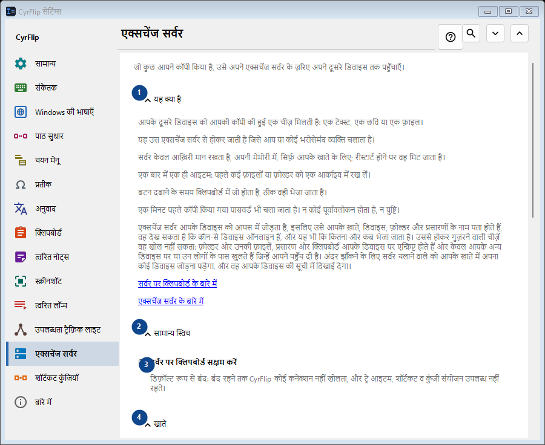
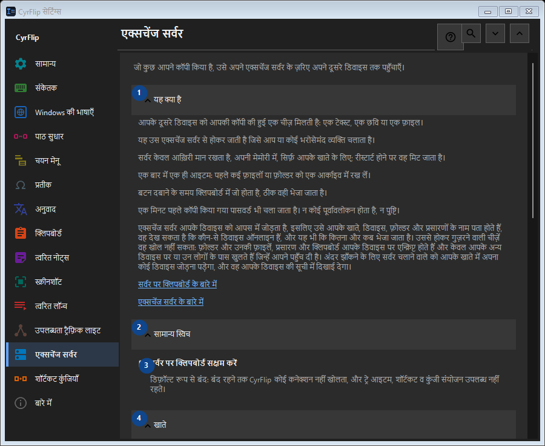

एक्सचेंज सर्वर
इसका उपयोग
जो कुछ आपने कॉपी किया है, उसे अपने एक्सचेंज सर्वर के ज़रिए अपने दूसरे डिवाइस तक पहुँचाएँ।


उपयोग का क्रम
सेटिंग तुरंत लागू होती हैं। कोई अनिवार्य क्रम नहीं है; नीचे दिए समूहों का उपयोग करें।
तत्व
1. यह क्या है
बताई गई कार्रवाई के लिए इस आदेश का उपयोग करें। स्वीकार करने से पहले पुष्टि पढ़ें।
आपके शॉर्टकट2. सामान्य स्विच
बताई गई कार्रवाई के लिए इस आदेश का उपयोग करें। स्वीकार करने से पहले पुष्टि पढ़ें।
आपके शॉर्टकट3. सर्वर पर क्लिपबोर्ड सक्षम करें
डिफ़ॉल्ट रूप से बंद: बंद रहने तक CyrFlip कोई कनेक्शन नहीं खोलता, और ट्रे आइटम, शॉर्टकट व कुंजी संयोजन उपलब्ध नहीं रहते।
आपके शॉर्टकट4. खाते
बताई गई कार्रवाई के लिए इस आदेश का उपयोग करें। स्वीकार करने से पहले पुष्टि पढ़ें।
आपके शॉर्टकट5. खाता जोड़ें..
जब तक «सर्वर पर क्लिपबोर्ड सक्षम करें» बंद है, यह उपलब्ध नहीं - पहले वह स्विच चालू करें। यह तत्व अभी उपलब्ध नहीं है। पहले सुविधा चालू करें या कोई प्रविष्टि चुनें।
आपके शॉर्टकट6. कुंजी संयोजन और शॉर्टकट
बताई गई कार्रवाई के लिए इस आदेश का उपयोग करें। स्वीकार करने से पहले पुष्टि पढ़ें।
आपके शॉर्टकट7. क्लिपबोर्ड को सर्वर पर भेजें
जब तक «सर्वर पर क्लिपबोर्ड सक्षम करें» बंद है, यह उपलब्ध नहीं - पहले वह स्विच चालू करें। यह तत्व अभी उपलब्ध नहीं है। पहले सुविधा चालू करें या कोई प्रविष्टि चुनें।
आपके शॉर्टकट8. बदलें - क्लिपबोर्ड को सर्वर पर भेजें
जब तक «सर्वर पर क्लिपबोर्ड सक्षम करें» बंद है, यह उपलब्ध नहीं - पहले वह स्विच चालू करें। यह तत्व अभी उपलब्ध नहीं है। पहले सुविधा चालू करें या कोई प्रविष्टि चुनें।
आपके शॉर्टकट9. सर्वर से क्लिपबोर्ड प्राप्त करें
जब तक «सर्वर पर क्लिपबोर्ड सक्षम करें» बंद है, यह उपलब्ध नहीं - पहले वह स्विच चालू करें। यह तत्व अभी उपलब्ध नहीं है। पहले सुविधा चालू करें या कोई प्रविष्टि चुनें।
आपके शॉर्टकट10. बदलें - सर्वर से क्लिपबोर्ड प्राप्त करें
जब तक «सर्वर पर क्लिपबोर्ड सक्षम करें» बंद है, यह उपलब्ध नहीं - पहले वह स्विच चालू करें। यह तत्व अभी उपलब्ध नहीं है। पहले सुविधा चालू करें या कोई प्रविष्टि चुनें।
आपके शॉर्टकट11. “भेजें” को डेस्कटॉप पर रखें
जब तक «सर्वर पर क्लिपबोर्ड सक्षम करें» बंद है, यह उपलब्ध नहीं - पहले वह स्विच चालू करें। यह तत्व अभी उपलब्ध नहीं है। पहले सुविधा चालू करें या कोई प्रविष्टि चुनें।
आपके शॉर्टकट12. “प्राप्त करें” को डेस्कटॉप पर रखें
जब तक «सर्वर पर क्लिपबोर्ड सक्षम करें» बंद है, यह उपलब्ध नहीं - पहले वह स्विच चालू करें। यह तत्व अभी उपलब्ध नहीं है। पहले सुविधा चालू करें या कोई प्रविष्टि चुनें।
आपके शॉर्टकट13. प्राप्त फ़ाइलें
बताई गई कार्रवाई के लिए इस आदेश का उपयोग करें। स्वीकार करने से पहले पुष्टि पढ़ें।
आपके शॉर्टकट14. सर्वर से प्राप्त फ़ाइलों का फ़ोल्डर
जब तक «सर्वर पर क्लिपबोर्ड सक्षम करें» बंद है, यह उपलब्ध नहीं - पहले वह स्विच चालू करें। यह तत्व अभी उपलब्ध नहीं है। पहले सुविधा चालू करें या कोई प्रविष्टि चुनें।
आपके शॉर्टकट15. चुनें - सर्वर से प्राप्त फ़ाइलों का फ़ोल्डर
जब तक «सर्वर पर क्लिपबोर्ड सक्षम करें» बंद है, यह उपलब्ध नहीं - पहले वह स्विच चालू करें। यह तत्व अभी उपलब्ध नहीं है। पहले सुविधा चालू करें या कोई प्रविष्टि चुनें।
आपके शॉर्टकट16. फ़ोल्डर खोलें - सर्वर से प्राप्त फ़ाइलों का फ़ोल्डर
जब तक «सर्वर पर क्लिपबोर्ड सक्षम करें» बंद है, यह उपलब्ध नहीं - पहले वह स्विच चालू करें। यह तत्व अभी उपलब्ध नहीं है। पहले सुविधा चालू करें या कोई प्रविष्टि चुनें।
आपके शॉर्टकट